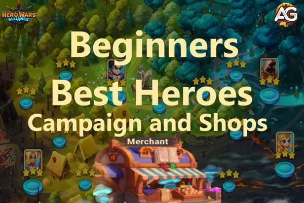

Entendendo os Princípios Básicos do Investimento em Heróis
Antes de entrar nos heróis específicos, é essencial entender os princípios gerais de investimento em heróis no Hero Wars. Seus investimentos em heróis devem estar alinhados com sua estratégia geral, considerando fatores como o tipo de inimigos que você está enfrentando, a composição da sua equipe e os recursos disponíveis.

Fatores Chave a Considerar:
- Funções dos Heróis: Tanques, Causadores de Dano, Suportes e Curandeiros.
- Sinergia: Como os heróis funcionam bem juntos.
- Facção: Diferentes facções oferecem bônus e sinergias únicas.
- Progressão na Campanha: Alguns heróis se destacam na campanha, enquanto outros brilham no PvP ou em atividades relacionadas à guilda, como a Hydra.
Heróis da Campanha: Por Onde Começar
Artemis: Uma Forte Heroína da Facção da Honra

Função: Atiradora
- Facção: Honra
- Por que investir: Artemis é um investimento sólido para a facção da Honra, embora você não a desbloqueie imediatamente. Quando disponível, comece a farmar suas pedras de alma, pois ela é uma excelente causadora de dano que funciona bem tanto em PvE quanto em PvP. Sua força cresce constantemente, tornando-a uma valiosa adição à sua equipe.
Astaroth: Seu Tanque de Confiança

Função: Tanque
- Facção: Caos
- Por Que Investir: Astaroth é frequentemente o primeiro tanque que você encontrará na campanha, e ele vale cada recurso investido. Seu conjunto de habilidades é voltado para proteger sua equipe, tornando-o uma excelente escolha para iniciantes. Ele pode ressuscitar um aliado, efetivamente dando a você um sexto herói nas batalhas. Esta habilidade é poderosa, embora seja contrabalançada por Morrigan, que pode impedir ressureições. Mesmo assim, Astaroth continua sendo um tanque forte e confiável e deve ser um dos seus primeiros investimentos.
Ginger: A Heroína do Progresso

Função: Causadora de Dano
- Facção: Progresso
- Por Que Investir: Antes considerada uma escolha inferior, Ginger ressurgiu graças à sua utilidade na facção Progresso. Com forte dano em área (AoE), Ginger pode te ajudar a avançar mais rápido nos níveis da campanha. Entre Ginger e Keira, Ginger é frequentemente a melhor escolha para novos jogadores focados na facção Progresso.
Heidi: O Especialista em Dano Puro

Função: Causador de Dano
- Facção: Natureza
- Por Que Investir: Heidi é altamente valorizado por seu dano puro, que ignora as mecânicas de esquiva. Isso o torna uma ótima escolha contra heróis como Dante, Octavia e equipes construídas em torno de habilidades de esquiva. O papel de Heidi como causador de dano puro o torna indispensável em certas batalhas.
Hélio: O Contra-Atacante de Dano Crítico

Função: Suporte
- Facção: Honra
- Por que investir: Hélio é excelente para contra-atacar equipes focadas em dano crítico, tornando-o uma escolha principal ao enfrentar oponentes que dependem muito de críticos. Se você costuma encontrar tais equipes, investir em Helios pode proporcionar uma forte capacidade defensiva e melhorar a sobrevivência da sua equipe.
Keira: Uma Alternativa Sólida

Função: Causadora de Dano
- Facção: Eternidade
- Por Que Investir: Keira é outra heroína viável no início do jogo. Embora Ginger possa ser mais benéfica para uma equipe focada em Progresso, Keira ainda é forte, especialmente quando combinada com heróis da facção Eternidade como Iris e Dante. Se você inclinar para uma equipe de Eternidade, Keira é um bom investimento.
Phobos: O Contra-Mago

Função: Controle
- Facção: Eternidade
- Por Que Investir: Phobos é um excelente contra para equipes focadas em magos. Sua habilidade de controlar e desabilitar magos inimigos o torna um ativo valioso tanto na campanha quanto no PvP. Comparado a Cornelius, Phobos é atualmente a escolha mais forte, especialmente na facção Eternidade.
Mojo: O Melhor para Campanha e Hidra

Função: Causador de Dano, Curador
- Facção: Natureza
- Por que Investir: Mojo é altamente eficaz em batalhas contra a Hidra quando combinado com Jhu. Mesmo com apenas três estrelas, ambos podem contribuir muito para sua guilda. À medida que eles sobem de nível, seu dano aumenta, e eventualmente eles podem causar danos significativos até mesmo em Hidras Lendárias sem precisar estar totalmente maximizados.
Heróis da Campanha para Evitar (Por Enquanto)
Embora alguns heróis possam parecer atraentes, eles podem não valer seus recursos no início. Aqui está um resumo rápido de quem evitar:
Aurora e Galahad: Tanques Superestimados

Por Que Evitar:
- Embora apareçam cedo e possam parecer bons tanques, Astaroth geralmente é um investimento melhor. Tanto Aurora quanto Galahad exigem um investimento significativo para serem eficazes, o que pode não ser viável no início do jogo.
Raposa: Espere por uma Reformulação

Por Que Evitar:
- Raposa não oferece o suficiente em comparação com outros heróis. A menos que Raposa receba uma reformulação ou melhorias significativas, é melhor focar em outros causadores de dano.
Krista e Lars: Dupla Desatualizada

Por Que Evitar:
- Antes populares, Krista e Lars perderam sua vantagem com a introdução de novos heróis como Kayla e Aidan. Se você está considerando uma equipe de Caos, é melhor investir nessas novas opções.
Mercador: Onde Gastar sua Moeda
À medida que você progride, você ganhará moedas de várias lojas. Decidir onde gastar essas moedas é crucial, pois pode impactar significativamente a força da sua equipe.
Loja da Cidade: O Valor de Dorian

Dorian:
- A habilidade de vampirismo de Dorian o torna um herói de suporte valioso, mesmo em níveis baixos de estrelas. Você não precisa maximizá-lo sua utilidade está em sua habilidade de conceder vampirismo aos aliados, que continua funcionando mesmo após sua morte.
Loja VIP: O Valor de Andvari e Sebastian

Andvari:
- Evite gastar em Andvari na loja VIP. Embora ele seja altamente eficaz contra equipes de K'arkh, existem outros contra-ataques disponíveis. Além disso, com a introdução da classe de tanques, Andvari perdeu seu valor como tanque improvisado por ser um guerreiro. Ele também não pode derrotar equipes de K'arkh sozinho e requer um segundo tanque.

Sebastian:
- Um forte herói de suporte, Sebastian é excelente para combater equipes de controle. Se você tiver acesso a ele via loja VIP, ele é um investimento que vale a pena.
Loja da Arena: Priorize o Juiz

Juiz:
- Se você está construindo uma equipe de Progresso, Juiz é uma das suas melhores escolhas. Ele oferece uma ótima sinergia com outros heróis de Progresso e fornece um excelente suporte. Priorize Juiz na loja e cultive Ginger na campanha.
Dica Extra:
- Invista em Astaroth como tanque para a facção de Progresso enquanto trabalha para obter Julius. Julius é o melhor tanque para essa facção, mas suas pedras de alma são difíceis de obter.
Loja dos Salteadores:

Sem Rosto:
- No Salteadores, a melhor compra é o Sem Rosto, um herói que se encaixa em qualquer equipe e tem ótima sinergia, combinando bem tanto com equipes físicas quanto com equipes de magos, além de copiar as habilidades ultimate dos inimigos.
- Depois disso, você pode escolher entre Lilith para a facção do Caos ou Satori para a facção do Mistério. Evite Cornelius por enquanto, pois Phobos é uma alternativa melhor e pode ser encontrado na campanha.
Loja da Torre: Considere Dante e Orion

Dante:
- Dante é um herói altamente flexível que se destaca em equipes baseadas em esquiva. Em 2024, Dante continua relevante e poderoso, especialmente quando combinado com heróis como Octavia.

Orion:
- Com a chegada de Folio, Orion viu um ressurgimento em popularidade. Se você está procurando investir em um mago, Orion é uma escolha forte, particularmente em sinergia com Folio.
Loja de Terralém: Seja Seletivo
Evite Investir Muito Cedo:
- A Loja de Terralém oferece várias pedras de alma de herói, mas muitas vezes é melhor esperar por eventos onde você pode ganhá-las de forma mais eficiente. No entanto, se você precisar investir, priorize Jorgen, Luther e Qing Mao, pois eles oferecem utilidade sólida. Nesta loja, também é aconselhável priorizar a compra de pedras de skins grandes.
Loja da Masmorra: Um Investimento a Longo Prazo
A Loja da Masmorra oferece recursos valiosos, mas é fácil se sentir sobrecarregado pelas opções. Aqui está como navegar por ela:
Pocões de Titã Primeiro
Por Que:
- Ao começar, priorize a compra de Pocões de Titã. Os Titãs desempenham um papel crucial nas atividades da guilda, e evoluí-los cedo pode lhe dar uma vantagem significativa.
Foco em Skins e Poeira Depois
- Quando seus Titãs estiverem em um nível decente, mude o foco para a compra de skins de Titãs e poeira de fadas. Esses itens ajudarão a melhorar ainda mais seus Titãs, dando-lhe uma vantagem mais forte nas batalhas.
Recomendações de Heróis para a Loja da Masmorra:

Corvus:
- Ideal para equipes da Eternidade.

Isaac:
- Essencial para equipes do Progresso, especialmente contra oponentes baseados em magos.

Alvanor:
- Perfeito para equipes da Natureza, particularmente quando combinado com heróis como Mojo e Cogu.
Loja da Grande Arena:

Rufus:
- A Loja da Grande Arena é ótima, pessoal. Rufus é um herói que não precisa ser muito forte para ser útil apenas levá-lo até o nível Violeta o tornará eficaz o suficiente.

Lian:
- Você também pode focar em Lian, outra heroína que pode proporcionar bons resultados, mesmo com baixo poder.
Loja de Pedras da Alma: Evite Investir no Jet

Jet:
- Embora Jet seja um herói formidável, farmar suas pedras da alma na Loja de Pedras da Alma é extremamente caro, especialmente se você é um jogador free-to-play (F2P) ou alguém que gasta minimamente no jogo. Atualmente, Jet não está apresentando um desempenho bom o suficiente para justificar o alto custo, oferecendo muito pouco para o investimento. Como um jogador F2P ou de baixo investimento, evitar Jet deve ser uma prioridade.
Itens a Considerar:
- Além disso, considere investir em poções de EXP para aumentar rapidamente o nível de seus heróis, proporcionando um impulso mais rápido ao poder geral da sua equipe. Depois, foque na compra de itens de equipamento laranja para fortalecer sua equipe principal.
Loja da Guerra da Guilda: Foque em Jhu e Nebula

Jhu:
- Essencial para lidar com os chefes da Hidra, Jhu deve ser sua primeira compra se você estiver focando nas batalhas contra a Hidra.

Nebula:
- Uma poderosa heroína de suporte, Nebula pode se encaixar em quase qualquer equipe, aumentando o dano causado pelo seu principal herói causador de dano. Ela é indispensável para qualquer jogador sério.
Loja da Hidra: Foque em Yasmine e Morrigan
Como iniciante, gerenciar suas Moedas da Hidra pode ser complicado. Aqui vão algumas dicas:

Yasmine:
- Uma assassina de primeira linha, Yasmine se destaca em equipes de dano crítico. Investir nela pode lhe dar uma vantagem poderosa tanto no PvP quanto no PvE.

Morrigan:
- Se você está enfrentando equipes com habilidades de ressurreição, Morrigan é inestimável. Sua capacidade de impedir ressurreições a torna uma escolha estratégica contra equipes com Astaroth ou Rufus.
Loja do Caminho do Herói: Gaste com Sabedoria

Tristan e Xe'sha:
- Tristan e Xe'sha são excelentes heróis para comprar, mas a escassez de moedas do Caminho do Herói e a abundância de itens úteis disponíveis tornam sua escolha difícil para iniciantes, pois eles precisam decidir entre recursos ou suas pedras de alma.
Foque em Compras Essenciais:
- A Loja do Caminho do Herói oferece recursos raros, mas eles têm um custo elevado. Priorize a melhoria dos níveis de estrela dos seus heróis e compre apenas itens que proporcionem benefícios imediatos e significativos.
Considerações Finais e Resumo da Estratégia
À medida que você avança em Hero Wars Alliance, seus investimentos em heróis moldarão seu sucesso geral. Ao focar em heróis-chave tanto da campanha quanto das diversas lojas, você pode construir uma equipe bem equilibrada capaz de enfrentar os muitos desafios do jogo.
Pontos-Chave:
- Comece com Astaroth: Ele é sua melhor aposta como tanque no início do jogo.
- Ginger sobre Keira: Foque nos heróis do Progresso logo no início.
- Seja seletivo nos investimentos nas lojas: Não gaste seus recursos de forma muito ampla; foque em heróis que proporcionarão o maior valor para a composição da sua equipe.
Lembre-se, as escolhas que você faz agora terão efeitos a longo prazo no seu jogo. Escolha sabiamente e boa sorte!
 Tier List Hero Wars JvJ
Tier List Hero Wars JvJ  Times mais usados na Liga Royal HWA
Times mais usados na Liga Royal HWA  Evite Esses 6 Heróis em Hero Wars
Evite Esses 6 Heróis em Hero Wars